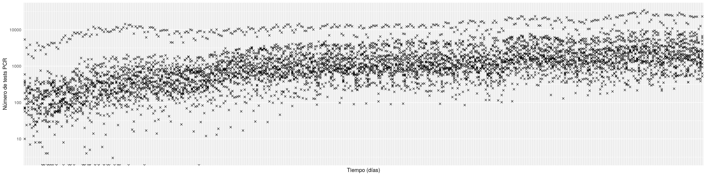
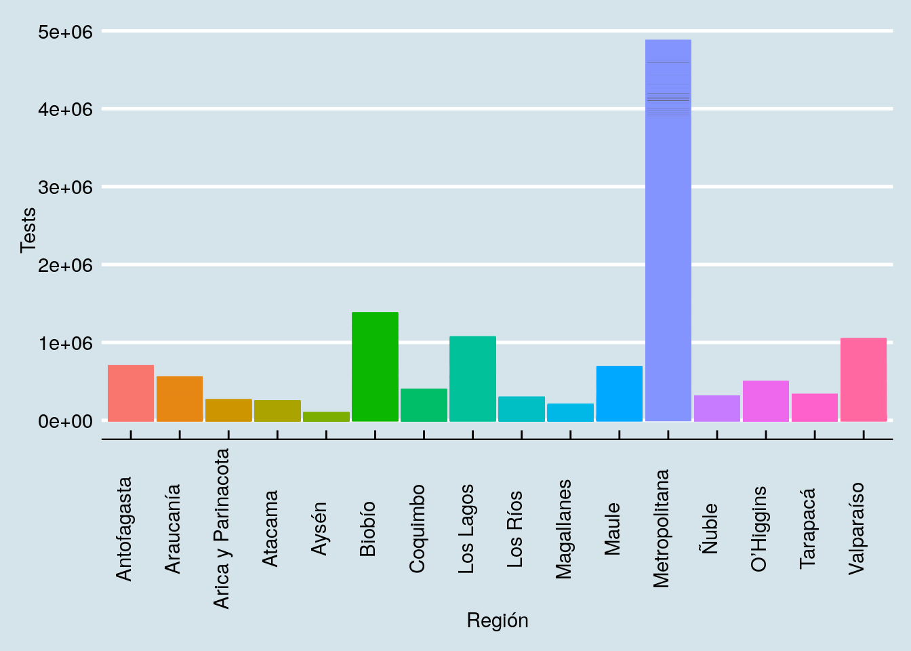

2 CLASE 2 - Creación y exploración de estructuras de datos
2.1 Creación de dataframes
2.2 Descargando data desde internet
2.2.1 Descarga desde página web
R cuenta con multiples metodos para descargar archivos.
El paquete utils usa programas del sistema como metodos para download.file(), como curl, wget, wininet, etc. los cuales pueden no estar instalados en el sistema.
Por ejemplo, download.file(URL, method = "wget") usualmente falla en Windows.
Especificando otro metodo, download.file(URL, method = "libcurl") funciona.
Podemos descargar datasets directamente desde R, lo cual resulta util a la hora de evaluar data de publicaciones presente como Información suplementaria.
library(readxl)
# Data suplementaria bonita
suplementaria.url <- "https://www.pnas.org/highwire/filestream/794560/field_highwire_adjunct_files/0/pnas.1800165115.sd01.xlsx"
destfile <- "pnas_1800165115_sd01.xlsx"
#Para LINUX usar:
download.file(url= suplementaria.url, destfile= 'sup_bonita.xlsx', method = "wget")
#Para WINDOWS usar:
download.file(url= suplementaria.url, destfile= 'sup_bonita.xlsx', method = "libcurl")
suplementaria.bonita <- read_excel( "sup_bonita.xlsx" )
suplementaria.bonita## # A tibble: 368 x 11
## GeneID `Entrez Gene Na… P7MeanFPKM P32MeanFPKM `10wkMeanFPKM` `9.5mMeanFPKM`
## <chr> <chr> <dbl> <dbl> <dbl> <dbl>
## 1 Ctss cathepsin S 0.59 1.13 3.03 8.32
## 2 Oasl2 2'-5' oligoaden… 1.06 3.37 3.70 36.1
## 3 Zc3hav1 zinc finger CCC… 0.58 1.42 1.53 6.84
## 4 Ggta1 glycoprotein ga… 1.65 0.993 1.04 4.89
## 5 Lyz2 lysozyme 1.01 1.44 3.46 4.57
## 6 Ifit1 interferon-indu… 0.773 2.08 2.12 13
## 7 Tyrobp TYRO protein ty… 3.06 4.73 3.33 4.15
## 8 C4b complement comp… 1.37 7.39 8.02 23.1
## 9 Wdfy1 WD repeat and F… 10.3 4.07 1.36 1.65
## 10 Osmr oncostatin M re… 6.49 6.40 4.52 13.3
## # … with 358 more rows, and 5 more variables: 2yrMeanFPKM <dbl>, log2 FC <dbl>,
## # logCPM <dbl>, PValue <dbl>, FDR <dbl>Por motivos de compatibilidad, puede ser preferible usar GET(), pero en general los metodos de download.file() suelen ser más rapidos y la mayor parte de la gente en bioinformatica usa sistemas basados en Linux.
library(utils) # Usar download.file() para descargar
library(httr) # Usa GET() para descargar
# Sitio web arbitrario
suplementaria.excel.url <- "https://cdn.elifesciences.org/articles/65202/elife-65202-fig5-data1-v1.xlsx"
# Para LINUX y WINDOMS usar httr::GET()
GET(suplementaria.excel.url , # Dirección de descarga
write_disk(tf <- tempfile(fileext = "suplementaria_excel.xlsx"))) # Guardar como "tf" temporal
suplementaria.excel <- read_excel(tf) # Lee "tf"
# Para LINUX USAR
download.file(url= suplementaria.excel.url, # Dirección de descarga
destfile= "suplementaria_excel.xlsx", # Guardar como...
method = "wget") # Usando wget, incluido en Linux
suplementaria.excel <- read_excel("suplementaria_excel.xlsx")
suplementaria.excel # Abriendo la dataComo advertencia respecto a los xsls, estos usualmente no tienden a ser “estandar,” por lo que muchas veces hay que post-procesar un dataset descargado para hacer algo util con el. Comunmente, solo es omitir lineas y columnas que no contienen información relevante.
suplementaria.excel.reformateada <- read_excel("suplementaria_excel.xlsx",
skip = 2, # Omite filas sin información
n_max = 11 # Omite filas de resumen
)
suplementaria.excel.reformateada## # A tibble: 11 x 5
## Animal `Slice identifie… `No. of SEP +ve … `No. of Cas9 ce… `SEP +ve / Cas9 …
## <dbl> <dbl> <dbl> <dbl> <dbl>
## 1 1 1 7 62 11.3
## 2 1 2 15 77 19.5
## 3 2 1 7 70 10
## 4 2 2 16 83 19.3
## 5 2 3 12 102 11.8
## 6 2 4 6 73 8.22
## 7 2 5 9 68 13.2
## 8 2 6 8 54 14.8
## 9 3 1 11 60 18.3
## 10 3 2 13 55 23.6
## 11 3 3 14 77 18.22.2.2 Descarga desde GitHub
GitHub es un servicio de repositorios para control de versiones de codigo basado en Git. Actualmente es la plataforma más popular para hosting del codigo de software, con proyectos como RStudio, el catalogo de cursos de FreeCodeCamp, este mismo curso, etc. Muchos proyectos de ciencia abierta, ciencia ciudadana, y cada vez más publicaciones ponen la data a disposición de la comunidad; con el mismo historial de versiones que el codigo usado para generar y analizar dicha data.
El Ministerio de Ciencia de Chile dispone la data de Coronavirus como tablas CSV facilmente descargables desde un repositorio en Github. Por ejemplo, la data de examenes PCR tomados por region.
library(readr)
github.url <- "https://raw.githubusercontent.com/MinCiencia/Datos-COVID19/master/output/producto7/PCR.csv" # Dirección del dataset publico
MINCIENCIA_PCR <- read_csv( github.url ) # Podemos leer los archivos directamente
MINCIENCIA_PCR## # A tibble: 16 x 375
## Region `Codigo region` Poblacion `2020-04-09` `2020-04-10` `2020-04-11`
## <chr> <chr> <dbl> <dbl> <dbl> <dbl>
## 1 Arica y Par… 15 252110 70 NA 93
## 2 Tarapacá 01 382773 NA NA NA
## 3 Antofagasta 02 691854 182 128 107
## 4 Atacama 03 314709 57 52 60
## 5 Coquimbo 04 836096 NA NA NA
## 6 Valparaíso 05 1960170 301 249 248
## 7 Metropolita… 13 8125072 5383 3185 2105
## 8 O’Higgins 06 991063 68 NA 74
## 9 Maule 07 1131939 397 219 NA
## 10 Ñuble 16 511551 364 NA 259
## 11 Biobío 08 1663696 592 149 281
## 12 Araucanía 09 1014343 124 148 126
## 13 Los Ríos 14 405835 NA 91 NA
## 14 Los Lagos 10 891440 341 199 178
## 15 Aysén 11 107297 10 NA NA
## 16 Magallanes 12 178362 73 24 46
## # … with 369 more variables: 2020-04-12 <dbl>, 2020-04-13 <dbl>,
## # 2020-04-14 <dbl>, 2020-04-15 <dbl>, 2020-04-16 <dbl>, 2020-04-17 <dbl>,
## # 2020-04-18 <dbl>, 2020-04-19 <dbl>, 2020-04-20 <dbl>, 2020-04-21 <dbl>,
## # 2020-04-22 <dbl>, 2020-04-23 <dbl>, 2020-04-24 <dbl>, 2020-04-25 <dbl>,
## # 2020-04-26 <dbl>, 2020-04-27 <dbl>, 2020-04-28 <dbl>, 2020-04-29 <dbl>,
## # 2020-04-30 <dbl>, 2020-05-01 <dbl>, 2020-05-02 <dbl>, 2020-05-03 <dbl>,
## # 2020-05-04 <dbl>, 2020-05-05 <dbl>, 2020-05-06 <dbl>, 2020-05-07 <dbl>,
## # 2020-05-08 <dbl>, 2020-05-09 <dbl>, 2020-05-10 <dbl>, 2020-05-11 <dbl>,
## # 2020-05-12 <dbl>, 2020-05-13 <dbl>, 2020-05-14 <dbl>, 2020-05-15 <dbl>,
## # 2020-05-16 <dbl>, 2020-05-17 <dbl>, 2020-05-18 <dbl>, 2020-05-19 <dbl>,
## # 2020-05-20 <dbl>, 2020-05-21 <dbl>, 2020-05-22 <dbl>, 2020-05-23 <dbl>,
## # 2020-05-24 <dbl>, 2020-05-25 <dbl>, 2020-05-26 <dbl>, 2020-05-27 <dbl>,
## # 2020-05-28 <dbl>, 2020-05-29 <dbl>, 2020-05-30 <dbl>, 2020-05-31 <dbl>,
## # 2020-06-01 <dbl>, 2020-06-02 <dbl>, 2020-06-03 <dbl>, 2020-06-04 <dbl>,
## # 2020-06-05 <dbl>, 2020-06-06 <dbl>, 2020-06-07 <dbl>, 2020-06-08 <dbl>,
## # 2020-06-09 <dbl>, 2020-06-10 <dbl>, 2020-06-11 <dbl>, 2020-06-12 <dbl>,
## # 2020-06-13 <dbl>, 2020-06-14 <dbl>, 2020-06-15 <dbl>, 2020-06-16 <dbl>,
## # 2020-06-17 <dbl>, 2020-06-18 <dbl>, 2020-06-19 <dbl>, 2020-06-20 <dbl>,
## # 2020-06-21 <dbl>, 2020-06-22 <dbl>, 2020-06-23 <dbl>, 2020-06-24 <dbl>,
## # 2020-06-25 <dbl>, 2020-06-26 <dbl>, 2020-06-27 <dbl>, 2020-06-28 <dbl>,
## # 2020-06-29 <dbl>, 2020-06-30 <dbl>, 2020-07-01 <dbl>, 2020-07-02 <dbl>,
## # 2020-07-03 <dbl>, 2020-07-04 <dbl>, 2020-07-05 <dbl>, 2020-07-06 <dbl>,
## # 2020-07-07 <dbl>, 2020-07-08 <dbl>, 2020-07-09 <dbl>, 2020-07-10 <dbl>,
## # 2020-07-11 <dbl>, 2020-07-12 <dbl>, 2020-07-13 <dbl>, 2020-07-14 <dbl>,
## # 2020-07-15 <dbl>, 2020-07-16 <dbl>, 2020-07-17 <dbl>, 2020-07-18 <dbl>,
## # 2020-07-19 <dbl>, 2020-07-20 <dbl>, …Es importante notar que esta esta en raw.githubusercontent…, lo cual seria distinto a https://github.com/MinCiencia/Datos-COVID19/blob/master/output/producto7/PCR.csv , que es donde llegamos explorando el repo metiante links.
https://github.com/muestra la data con opciones como un historial de cambios y un README.md, pero es una pagina web completahttps://raw.githubusercontent.com/tiene el archivo de data puro que queremos descargar
library(tidyverse)
MINCIENCIA_PCR$Region -> my_col_names
MINCIENCIA_PCR %>% select(contains('20')) -> only_dates
only_dates %>% t %>% as.data.frame() %>% set_names(my_col_names) -> my_datamy_data %>%
rownames_to_column("Fecha") %>%
pivot_longer(!Fecha, names_to = "Región", values_to = "Tests") -> my_data_for_plot
p1 <- ggplot(my_data_for_plot, aes(x = Fecha, y = Tests)) +
geom_point(shape = 4)
p1p1+ scale_y_log10() -> p2
p2p1+ scale_y_log10() -> p2
p2
p2 + labs(x = "Tiempo (días)", y = "Número de tests PCR") + theme(axis.ticks = element_blank(), axis.text.x=element_blank()) -> p3
p3
p3+aes( color = Región)+ theme(legend.position = "bottom", legend.box = "horizontal") -> p4
p4ggplot(my_data_for_plot, aes(x=Fecha, y = Tests, color = Región)) +
geom_point( alpha=0.5)+ theme(legend.position = "bottom", legend.box = "horizontal")+ scale_y_log10()+ theme(axis.ticks = element_blank(), axis.text.x=element_blank()) + labs(x = "Tiempo (días)", y = "Número de tests PCR") -> my_plot
my_plot## Warning: Transformation introduced infinite values in continuous y-axis## Warning: Removed 40 rows containing missing values (geom_point).library(ggthemes)
ggplot(my_data_for_plot, aes(x=Región, y=Tests, color=Región))+geom_bar(stat="identity") +
theme_economist() +
theme(legend.position = "none", axis.text.x = element_text(angle = 90)) 
2.2.3 Descarga de lista de URLs
Puede ser el caso de que tengamos un grupo de datasets que queramos descargar; lo cual seria largo de hacer manualmente, pero relativamente corto de implementar con un loop.
datasets.descargar <- c()2.3 Leyendo archivos extraños
2.3.1 Escritura de archivos con delimitadores (csv, tsv, txt, etc.)
En un archivo de texto plano, denominamos un caracter especifico como delimitador.
,en archivos Coma Separated Values;en archivos CSV que por motivos incluyen comas
\ten archivos Tab Separated Valuessuele ser un separador comun en archivos de texto o al copiar y pegar desde Excel
La función readr::read_delim() puede aceptar delimitadores arbitrarios a la hora de leer archivos de texto plano. Esto puede resultar util para tareas como parsear la salida de un programa y generar una tabla informativa.
# Output real de un programa de HPC; tira los valores a print() como forma
# de mostrar que esta haciendo algo en lugar de estar 10h sin noticias
stout <- "
(pid=7648)#EX_na1(e)#0.006122665930025846
(pid=7651)#EX_pro-L(e)#0.006122663829443571
(pid=7655)#EX_orn(e)#0.006122663638493012
(pid=7643)#EX_leu-L(e)#0.006122663638095198
(pid=7647)#EX_pyr(e)#0.006122663829665405
(pid=7659)#10FTHF6GLUtm#0.00612267089307223
(pid=7667)#EX_val-L(e)#0.006122663638095198
(pid=7617)#DM_fald#0.006122663638115122
(pid=7618)#DM_ahcys#0.006122663639234617
(pid=7621)#DM_pheme(c)#0.006122663638166545
(pid=7625)#EX_acac(e)#0.00612266382975526
(pid=7627)#EX_asn-L(e)#0.006122663638508968
"
log.info <- read_delim( stout , delim= '#' , col_names = FALSE)
log.info## # A tibble: 12 x 3
## X1 X2 X3
## <chr> <chr> <dbl>
## 1 (pid=7648) EX_na1(e) 0.00612
## 2 (pid=7651) EX_pro-L(e) 0.00612
## 3 (pid=7655) EX_orn(e) 0.00612
## 4 (pid=7643) EX_leu-L(e) 0.00612
## 5 (pid=7647) EX_pyr(e) 0.00612
## 6 (pid=7659) 10FTHF6GLUtm 0.00612
## 7 (pid=7667) EX_val-L(e) 0.00612
## 8 (pid=7617) DM_fald 0.00612
## 9 (pid=7618) DM_ahcys 0.00612
## 10 (pid=7621) DM_pheme(c) 0.00612
## 11 (pid=7625) EX_acac(e) 0.00612
## 12 (pid=7627) EX_asn-L(e) 0.006122.3.1.1 Escribiendo DataFrames en Excel
Aunque francamente suele ser un dolor de cabeza, es el formato de facto para compartir datos. Por favor, no contribuyan a este problema en el mundo de la ciencia. O al menos hagan Excels con sentido, sin arreglos esotericos de columnas y filas.
colnames( log.info ) <- c("Process ID","Node","Alpha") # Pone nombres de columna
writexl::write_xlsx( log.info , path = "logs_hpc.xlsx") # Guarda el Excel2.3.1.2 Listas y serializados
En datasets de gran tamaño, o donde una cantidad significativa de los datos son NaN, es convieniente usar formatos de archivos binarios, es decir, procesados y comprimidos, como un .zip o los archivos R Data Serial .RDS.
saveRDS( suplementaria.bonita , "sup_bonita.rds" ) # Pesa 26.1 kB, ~43% el tamaño del Excel originalEn caso de tener multiples objetos, podemos pasar estos dentro de una lista.
Estas son similares a vectores c(), en el sentido de que son objetos ordenados e iterables, paro a diferencia de los vectores, una lista puede contener multiples tipos de objetos, y estos pueden ser objetos complejos en lugar de tipos simples
Creamos listas con list(). Podemos guardar objetos como los plots hechos anteriormente.
plots <- list(
p1, # Fig 1
p2, # Fig 2
p3, # Fig 3
p4 # Fig 4
)
# Y guardamos todos los plots dentro de un RDS
saveRDS( plots, "plots.RDS" )2.4 Directorios en R
Si bien es posible trabajar con todos los codigos, datasets, resultados, resplados y demas en una unica carpeta, esto es lejos de ser agradable.

Ejemplo
2.4.1 Generación de listas de archivos de los directorios
Podemos listar todo lo que hay en un directorio
list.files(getwd() , pattern=NULL, all.files=FALSE)## [1] "_bookdown_files" "_bookdown.yml"
## [3] "_output.yml" "00-setup"
## [5] "01-intro" "02-estructuras-datos"
## [7] "baseline.csv" "baseline.csv.1"
## [9] "baseline.csv.2" "baseline.csv.3"
## [11] "baseline.csv.4" "baseline.csv.5"
## [13] "baseline.pkl" "baseline.tsv"
## [15] "baseline.xlsx" "baselines.tar.gz"
## [17] "baselines.tar.gz.1" "baselines.tar.gz.2"
## [19] "baselines.tar.gz.3" "baselines.tar.gz.4"
## [21] "baselines.tar.gz.5" "book.bib"
## [23] "clases_cache" "clases_files"
## [25] "clases.log" "clases.Rmd"
## [27] "clases.Rproj" "clases.tex"
## [29] "index.Rmd" "logs_hpc.xlsx"
## [31] "packages.bib" "plots.RDS"
## [33] "preamble.tex" "README.md"
## [35] "style.css" "sup_bonita.rds"
## [37] "sup_bonita.xlsx" "suplementaria_excel.xlsx"2.4.2 Creación de directorios y de archivos dentro de R
getwd() # Obtiene el directorio de trabajo
paste0(getwd(),'/hola') # Convierte getwkd() a caracter y concatena
file.path(getwd(),'hola') # Hace direcciones independientes del SO
file.path(getwd(),'hola','cosas') # Podemos definir sub-directorios